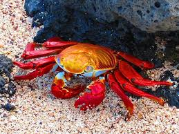
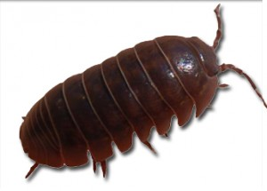
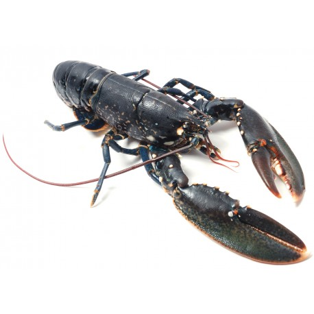
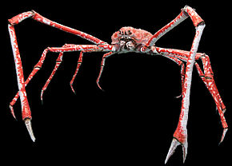

Le crustacé

Description
Le crustacé fait partie d'un sous-embranchement de la famille des Arthropodes.
Cet animal possède un exosquelette plus ou moins rigide.
La famille des crustacés compte plus de 50 000 espèces, par exemple, le cloporte,
le homard ou encore le crabe géant du Japon.
La plupart des espèces sont aquatiques, quelques-unes mènent une vie partiellement
ou totatlement terrestre.
Quelques exemples de crustacés
| Cloporte |
Homard |
Crabe géant du Japon |
| 
| 
| 
|